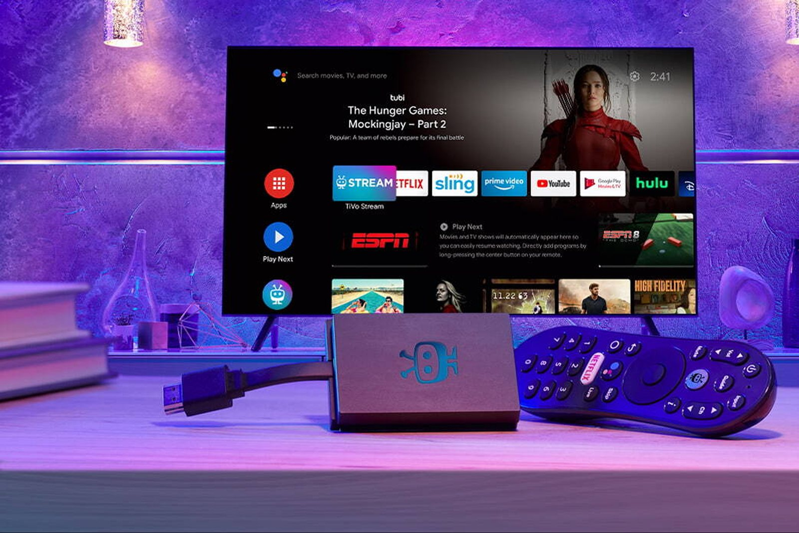

Systems that run. Not just render.
6+ years designing products that actually work. TV, mobile, automotive, web — I solve hard problems, write the specs, and ship things people use every day.
Background & skills
Experience
Pfai! Agency
- Built a creative studio from the ground up. Designed brand systems and web products that drove measurable growth for 10+ clients. Integrated AI-assisted design workflows into production — automation, rapid prototyping, asset generation.
- Shifted the business model from one-off services to retainer partnerships. Owned strategy, positioning, and pricing alongside creative direction and execution.
- Led team growth, hired designers, structured processes. Turned a freelance operation into a real agency.
Xperi Inc. (TiVo)
- Shipped product UX across the TiVo ecosystem: 2M+ Smart TVs activated in 5 countries. Owned settings, media player, and the legal/compliance surface for partners like Vestel and Panasonic.
- Designed in-car entertainment UI for BMW (now running on 7M+ vehicles). Led interaction patterns, accessibility, and handoff spec.
- Co-authored the design system backing TiVo Mobile and broadband platforms serving 2.6M+ households. Established component patterns and design tokens.
Sevio Solutions
- Designed and shipped product flows for e-commerce and CRM platforms. Owned wireframing, hi-fi spec, and user testing.
- Ran client presentations, design critiques, and iteration cycles. Built trust through clear communication and fast turnarounds.
- Bridged design and marketing teams on brand consistency. Handled visual design, identity work, and campaign support.
Skills
Case studies
TiVo multi-platform ecosystem
Designed multi-platform TV ecosystem: 2M+ smart TVs, 7M+ BMW vehicles, 2.6M+ households. Owned TiVo OS, media player, 4 mobile app releases, automotive/partner integrations. Balanced UX rigor with legal/compliance. Led design collaboration on IFA 2023 award-winning voice search.

Groovity
Led complete rebrand and growth strategy for music label: 3.4K followers, 15.2M views, 6.1K saves in 1.5mo. Owned strategy, brand identity, paid media, social management. Delivered rebrand, viral campaigns (4M+ reach), and converted playlists into revenue stream.
Omini Concept
Led UX redesign for premium architecture portfolio. Restructured IA, optimized image delivery (lightning-fast), streamlined lead capture. Reduced bounce rate, increased session duration. Transformed static gallery into lead-gen tool aligned with firm growth goals.
Parlay
Designed hi-fi UI + comprehensive component library for fantasy sports platform. Optimized player setup flow: 30% faster new user onboarding. Built high-contrast data system for live game tracking. Achieved 100% design-to-dev fidelity. Shipped.
Qzeen
Designed ecommerce site + created hyperrealistic 3D product renders (Blender) replacing photoshoots. Eliminated production delays, achieved 100% digital/physical parity, reduced design-revision cycles 50%. Maintained premium positioning across UI and product labels.
Work with me.
Looking for a designer who ships. I take on full-time roles, contracts, and strategic advisory. Based in Iași, work fully remote.
Email me →